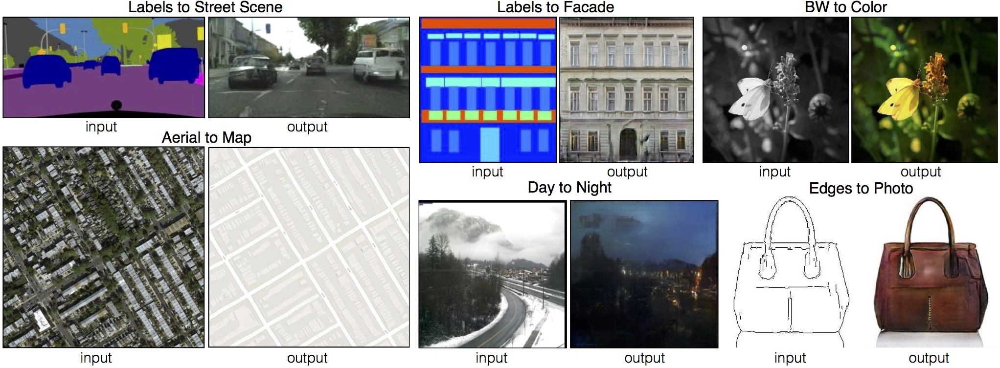

In these series of articles I'm going to explain the idea behind Generative Adversarial Networks (GANs) and how they work. I divided this tutorial into separate parts to not bore the readers. In upcoming articles I'm going to explain GANs in detail and how to implement one. Picture below shows some use cases of the GANs.

Image coutesy of https://phillipi.github.io"The most interesting idea in the last 10 years, in machine learning." (Yann Lecun)
This saying from Yann Lecun shows the beauty behind GANs and their impact on future research. Before going in to the details of GANs, first we need some foundation. I'm starting simple and as the series grows the content of each article will get more complicated, but I'm hoping with knowledge that we obtain in each article, we can understand future articles better.
Let me explain a simple game first, which you have already played with your friends. Guessing the number. In this game your friend chooses a number between a range and your job is to guess this number. If you are wrong, your friend can help you by guiding you to go up or down until you reach the number, but keep in mind that your guesses are limited. Now imagine, there is no range specified. Your job is harder now. To ease this, assume there is a list of numbers which you can guess any of them and you will win. But still, this game can get even harder by assuming that the numbers are in continues. There is a infinitesimal chance that you can guess the right number, but you can still get closer to it.
Generative adversarial networks in abstract form are really like this game, in its hardest form. The list of numbers are our training data, where they follow a pattern. Your friend is the oracle who knows these numbers but does not know the pattern (or more academic, their distribution). In the context of GANs your friend is called the discriminator. And you are the generator, who is trying to find the pattern of numbers. The guidance that your friend gives you is called the adversarial error back-propagation which helps you to go in the right direction.
For now, it is enough for introduction and what GANs are really are. In the next section will talk a little bit about machine learning in its supervised learning paradigm and it's different from unsupervised learning.
In supervised learning, our data is in form of \((x, y)\) pair, \(x\) is our vector of features and \(y\) is the corresponding label. We can learn the relation between \(x\) and \(y\) by learning a parameterized function like \(f(x;\theta) = y\) which map \(x\) on to \(y\). The \(\theta\) parameters are learned using an algorithm called back-propagation that determines which parameter caused the error by what margin. This is fairly simpler than when we have no label to compare our results with. But in todays world, every minute a humongous amount of data being generated by users of social media. These data is not in the form of \((x, y)\), they are simple \(x\) (\(x\) is a vector of features) with no label tagged to them. This makes using these data difficult. So we need algorithms that can learn new information from this data without any guidance from us. Here the Generative Adversarial Networks, the goal of this series come in to play.
What is a random variable?
In probability theory a random variable (RV) is an outcome of any random event such as tossing a coin, in this example a random variable is either head or tail. RV can be an outcome of any distribution, now you may ask what is a distribution? A probability distribution is a mathematical function that can produce probability of occurence of any different outcome. In simple words, a distribution is a description of a random phenomenon in terms of probabilities. There are many different probability distributions but to name a few, we have Normal Distribution or Gaussian Distribution, Uniform Distribution and etc. . Drawing a real number from a distribution is called sampling, which is the probability of occurring a random variable.
How images stored in computer?
A picture is collection of numbers called matrix, if we use RGB color space, we have three matrices for an image, each representing the Red, Blue, Green of the image, their combination form the final image. So, each image stored as three matrices in computer (for simplicity).
Now imagine you have a folder full of pictures of cats. Each number from the matrix of each image is drawn from a distribution, as long as they are cats, their distribution is the same, if we draw some numbers from this hypothetical distribution, we can generate a picture of a cat, but we don't have access to this distribution, it is very complex distribution in a very high dimensional space. The core problem in generative models is to learn this underlying structure of data (learning data distribution), if we can learn this distribution, by sampling random variables from this distribution we can generate new data like real ones. This is the goal in Generative Models and specially Generative Adversarial Networks.
Generative Adversarial Networks in Simple Words
There were some models before which tried to learn the underlying hidden structure of data, some succeeded but some failed to generalize. Generative adversarial networks or simply GANs are often regarded as producing the best samples. We can summarize GANs in a paragraph:
GANs are unsupervised model to learn the underlying distribution of training data in order to generate new samples. Today these models have many applications in realistic artwork generation, super resolution, colorization, forecasting in time series, simulation, planning and so on. These models instead of directly learning the distribution of data, they try to learn this distribution in an implicit manner, by running a minimax game between two models. One model try to generate fake data and the other model discriminate these data from the real data, the former model try to maximize the error of the latter and the latter try to minimize its error.